细分 · 头车
决定速度、加油点、等待点
系统只给三件事：全队短板续航、队形散开度、下一个安全等待点。
续航木桶队形评分
ROADLINK · 骑行情境
队友掉队、前车急刹、半路抛锚。选一个场景，亲手看看 AI 会在哪一步帮上忙。
从编队协同开始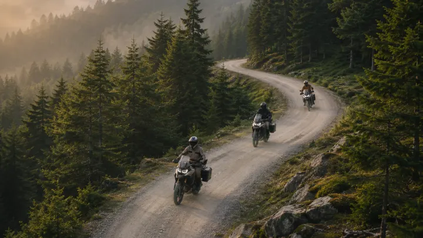
林道失去卫星定位后，车队仍能用相对位置发现掉队，让头车和收队人知道该等谁。
体验掉队提醒提前识别弯型和路况，把简短的控速提示投到头盔视线附近。
体验入弯提示手势唤醒，语音说出需求。系统拟好消息，骑手确认后同步给队友。
体验风噪语音识别车距和风险变化，按紧迫程度给骑手短提示。
体验分级预警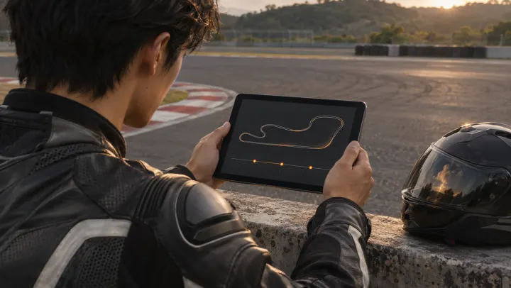
把关键骑行动作标在轨迹和时间线上，停车后直接回看最值得复盘的片段。
体验片段复盘安全停车后，把位置、车况与最后一段轨迹整理进救援包，方便技师判断。
体验模拟救援17 条骑行需求对应六个场景。实心代表直接覆盖，空心代表部分覆盖。
| 痛点 · 需求原文 | 01 编队 | 02 视界 | 03 交互 | 04 安全 | 05 复盘 | 06 车况 |
|---|---|---|---|---|---|---|
| 越野 | ||||||
| 独自陷车 / 倒车，没人知道，也说不清在哪 | — | — | — | — | ||
| 林道没有能用的导航和轨迹，只能跟着领队 | — | — | — | |||
| 山里一掉队就失联，现有 Mesh 撑不住 | — | — | — | |||
| 「过不去」的地形没有预案，全靠人到现场判断 | — | — | — | |||
| 越野盔 + 风镜 + 护颈，和耳机槽 / 麦克风臂直接冲突 | — | — | — | — | — | |
| 赛道 | ||||||
| 一节只有 15–20 分钟，没有复盘就等于白跑 | — | — | — | — | — | |
| 胎压胎温靠猜，暖胎圈全凭经验 | — | — | — | — | ||
| 刹车点、走线靠跟车和看视频学，没有即时反馈 | — | — | — | — | ||
| 赛道日的分组、排队、清场都靠微信群 | — | — | — | — | — | |
| 运动相机素材太多，没人剪 | — | — | — | — | — | |
| 一节的体能和注意力负荷没人管理 | — | — | — | — | ||
| 跑山时容易按赛道习惯骑，对路况判断不足 | — | — | — | |||
| 旅行骑行 | ||||||
| 抛锚时「求救无门」，连故障是什么都说不清 | — | — | — | — | — | |
| 组队靠微信群 + 对讲机拼凑，没有像样的协同工具 | — | — | — | — | — | |
| 异地出问题：售后网点少，车和手机也连不上 | — | — | — | — | — | |
| 轻车小排量上高速，遇到横风和大车乱流就是死亡摇 | — | — | — | — | ||
| 头盔耳机：风噪、断连、重配对，十年没解 | — | — | — | — | — | |
切换「林道」「城市」或「高速」，观察队伍状态和提醒对象。
以下为概念方案的设计目标，待实测验证。
系统只给三件事：全队短板续航、队形散开度、下一个安全等待点。
谁掉队、差多远、要不要减速接应，屏幕直接给结论。
路上结伴很常见，但不交换通讯录；只共享位置、续航与代号。
UWB 测距 + Mesh 心跳维持相对坐标，断链毫秒级重路由。
读 IMU、转向灯与刹车，判断进弯、靠边还是停车。
三级响应：HUD 微光 → 骨传导短音 → 停车坐标。
无卫星时退化为相对坐标；队友手机没电仍靠设备维持；休息可一键暂停告警；上限 20 人；只共享位置与续航。
掉队 P95 <15s；30 分钟漂移 <10m；误报 <1 次/小时。
不做对讲硬件（Lumos 已众筹 $897,828），不做手机支架，不做后视摄像头。
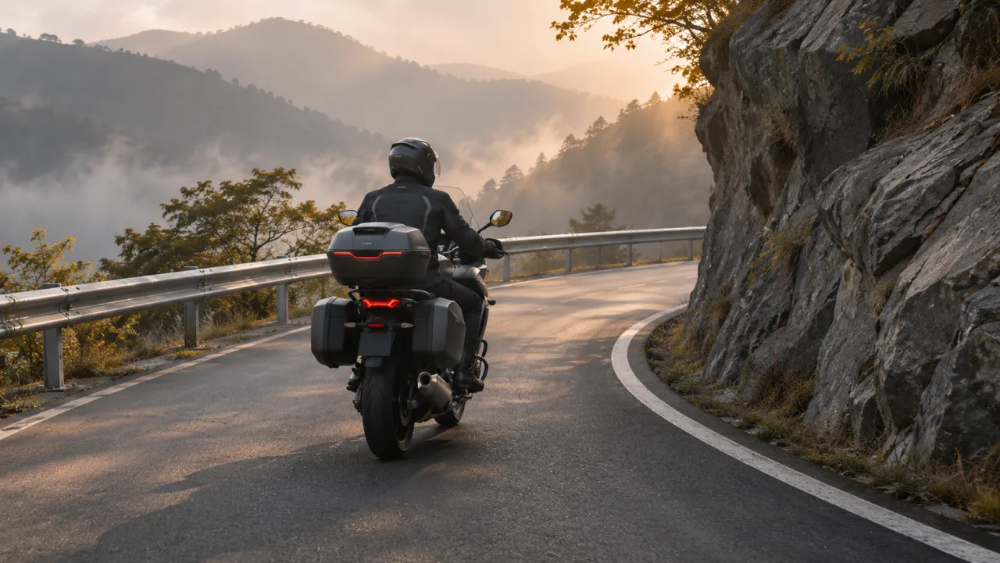
点「发夹弯」或「连续 S 弯」，看前方距离、弯型和提示如何变化。
以下为概念方案的设计目标，待实测验证。
对向压线 ≥3 次标红，只给建议速度，不报角度与编号。
一次进弯只提示一句「稳油 55」，翻身点单独给方向。
自动降速 15%，隐藏导航与来电，只留弯心与湿滑标记。
比地图描点更接近真实路面，施工与砂石一周内反映。
按你的稳态倾角与历史通过速度调整阈值。
单色贴片只显示速度与一句话，出弯自动恢复导航。
新路按地图曲率保守取值；GPS 漂移用 IMU 补位；同一个弯 5 分钟内不重复；跑山模式屏蔽圈速与倾角。
提示提前 ≥150m；重复提示 ≤1 次；视线离开 <0.5s。
不复刻 Glimpse 圆屏，不做 CarPlay 仪表，不做全彩 AR。
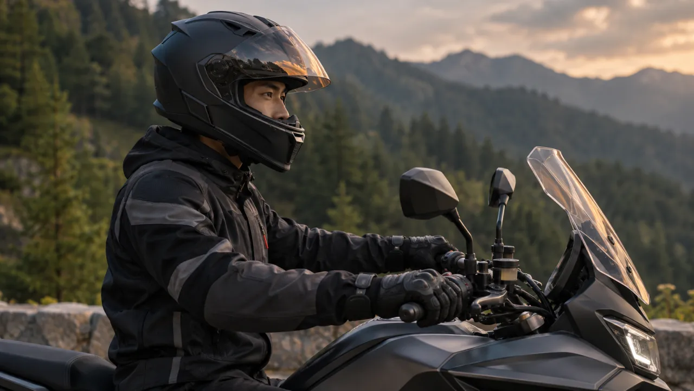
点麦克风，看看风噪下的语音如何变成一条待确认的消息。
点一下麦克风，跑一遍 96 dB 风噪下的完整对话
以下为概念方案的设计目标，待实测验证。
静止时允许多轮对话，确认只用点头或一句「发」。
100km/h 不做长播报，回复限定三种，地址推屏不靠耳朵。
说「去最近的加油站」，确认后重规划，地址推 HUD。
双麦波束 + 骨传导辅路，96dB 下仍然可用。
200KB 端侧模型，0.4 秒进入聆听，不靠喊。
拟稿、改路线一律先确认，零幻觉，可审计。
唤醒失败用车把按键兜底；置信度低就复述确认；断网保留接听 / 挂断 / 收藏点导航；只传唤醒后 8 秒音频。
100km/h 唤醒 >95%；误唤醒 <1 次/小时；单条闭环 <6s。
不做通用助手，不承诺所有 App，不做常开录音。
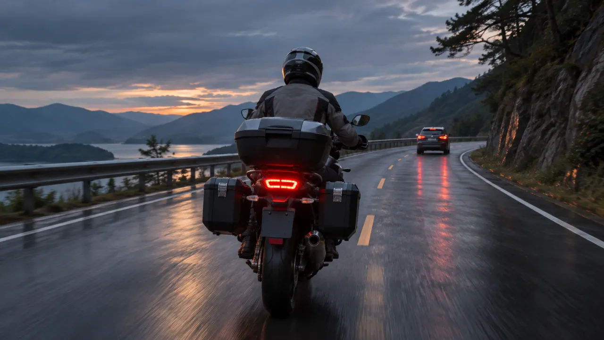
切换「前车急刹」「盲弯对向车」或「胎温异常」，观察风险提示。
以下为概念方案的设计目标，待实测验证。
毫米波 + 刹车灯视觉双校验，蠕行与停车不计 TTC。
没有前车时改用对向推断，提前减速并靠右。
IMU 侧向加速度识别乱流，提示拉开距离。
200Hz 采样，INT8 端侧推理，不等网络。
一级静音，二级短音，三级联动后车。
不做全时录像，停车后只回放触发前后。
雨雾与隧道只信毫米波；停车场与收费站抑制告警；可关二级但会在复盘里记账；只提示，不接管刹车与转向。
TTC 提前 >1.5s；误报 <5%/小时；三级响应 <100ms。
不做后视摄像头，不做全盔摄像头，不替代 ABS/TCS。
切换「赛道」「跑山」或「通勤」，看每种骑行如何选出不同复盘重点。
以下为概念方案的设计目标，待实测验证。
制动点、弯心、开油点对齐最佳圈，附 60 秒成片。
盲弯减速合规率、越线次数，不给排名。
前后各 8 秒，可剪高光，也可作事故证据。
12KB 模型常驻监听，其余不落盘。
只对比你自己的最佳圈，而不是别人的排名。
字幕、配乐、遥测水印一次生成，手机直接发。
存储满只覆盖非事件段；GPS 丢失用 IMU 推算；多人同场用设备绑定区分；路人面部自动打码。
回 Pit 90 秒出报告；存储 −80%；建议可执行 >80%。
不做运动相机（GoPro/Insta360 已强），不做重型云剪辑，不做只排名不归因。
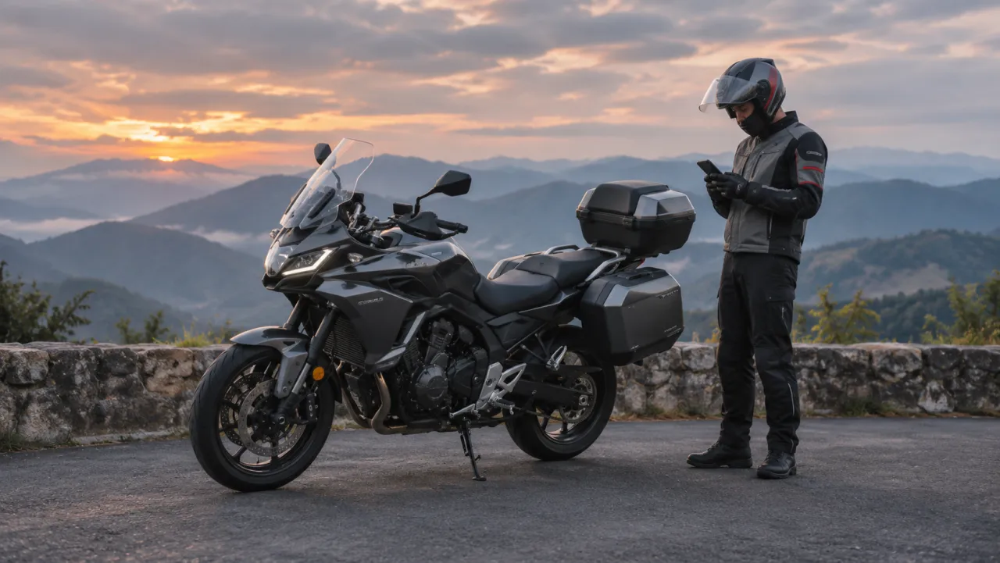
点「模拟一键救援」，查看位置、故障摘要和轨迹如何一起发出。
以下为概念方案的设计目标，待实测验证。
车型、故障码、声学摘要、位置与最后 30 秒轨迹一起发出。
三类高频异响，低置信只提示「去检查」，不吓唬人。
高转占比、涉水、重载都算进去，维修档案可导出。
1MB 模型跑在端侧，离线也能给结论。
给置信度与「是否停车」，不确定就说不确定。
物理只读线束，责任边界清楚。
OBD 不兼容时退化为声学 + IMU；置信度 <60% 只提示检查；无网救援包离线生成；原始音频不上传。
一次说清 >90%；SOS <30s；误诊 <10%。
不做通用诊断仪，不碰 ECU 控制，不做万能修车。
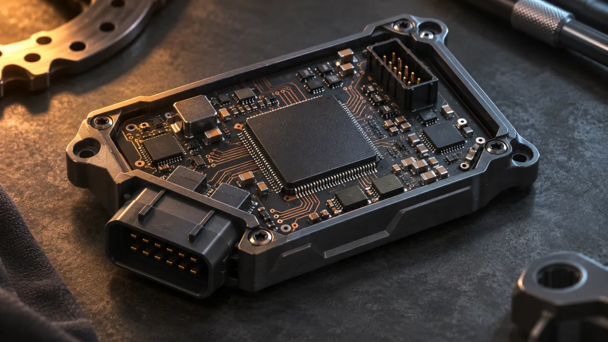
同时理解语音、路况和车况。骑手戴着手套也可以用语音下达指令。
前车急刹、弯道等关键提示优先在车上处理，减少对网络的依赖。
车端记录关键事件，手机与云端协助整理骑行复盘、同步车队信息。
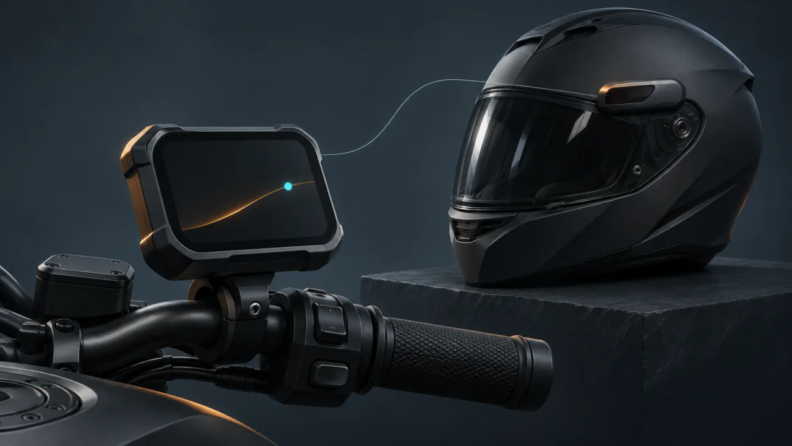
读取前方弯道和当前车速
判断何时提醒、给出什么信息
把弯型、距离和建议送到眼前
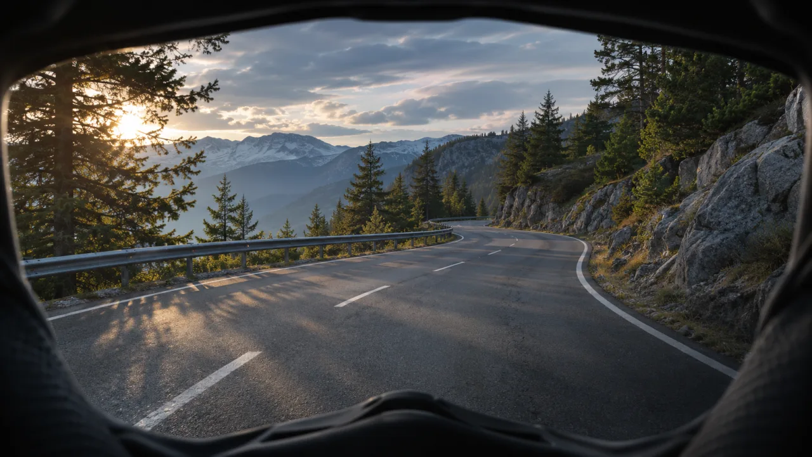
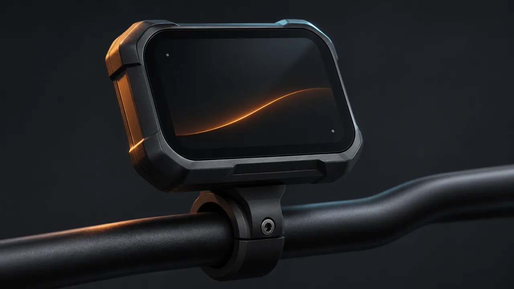
在车上处理道路与车辆信息，把判断结果同步给头盔。关键提示优先由车端处理，减少对网络的依赖。
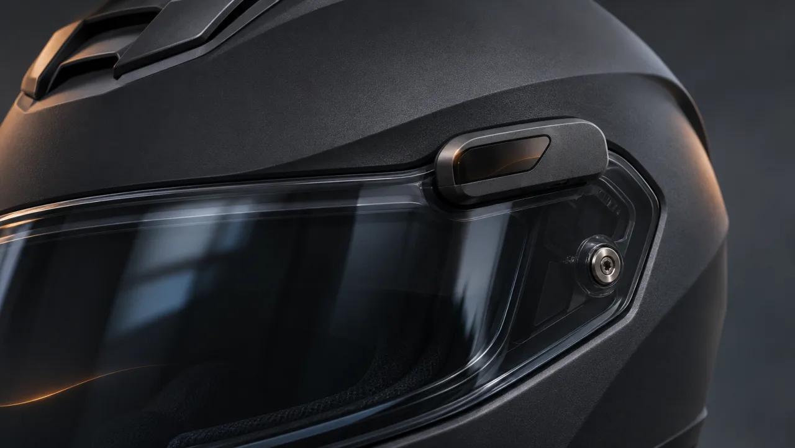
用简短的图标和文字呈现当前最重要的一条提示，让骑手少低头看屏幕。